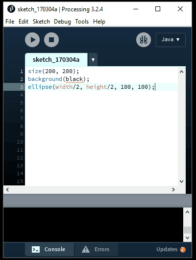
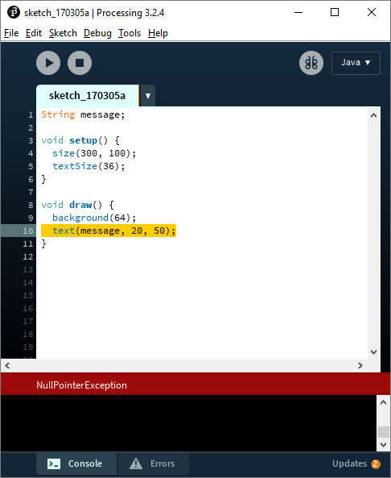
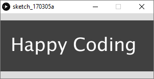
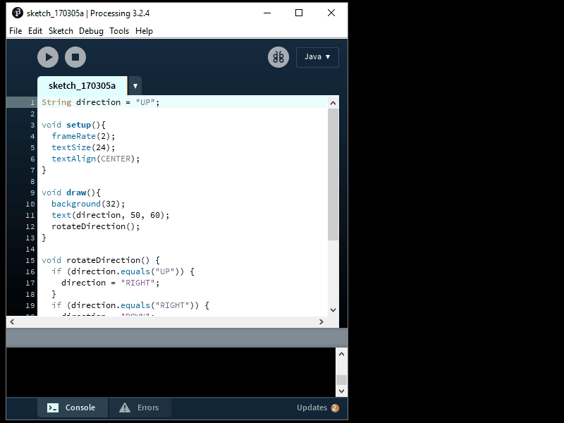

Beim Schreiben von Code treten zwangsläufig Fehler auf. Das kann frustrierend sein, aber es ist ein großer Teil davon, Programmierer zu sein. Jeder Programmierer stößt jedes Mal, wenn er sich hinsetzt, um Code zu schreiben, auf Fehler. Fehler können aus verschiedenen Gründen auftreten. Diese werden auch als Bug (= engl. für Käfer, Wanze) bezeichnet. Das beheben von diesen Fehler wird als Debugging bezeichnet. In dieser Lektion erfahrst du, wie du deinen Code debuggen kannst.
Fehlerarten
Es gibt 3 verschiedene Fehlerarten: Compilerfehler, Laufzeitfehler und Logikfehler. Die ersten beiden sind noch harmlos, da Processing uns in der Regel darauf aufmerksam macht, wo genau der Fehler ist. Anders ist das bei den Logikfehlern - hier muss man genauer suchen.
Compilerfehler
Die erste Art von Fehler, die du wahrscheinlich sehen wirst, sind Compilerfehler. Grundsätzlich tritt ein Compilerfehler auf, wenn du Code schreibst, den der Computer nicht versteht. In diesem Fall kann Processing deinen Code nicht einmal ausführen, da es nicht weiß, was es tun soll.
Die Regeln einer Sprache werden als ihre Syntax & Konventionen bezeichnet. Compilerfehler werden auch als Syntaxfehler bezeichnet, da sie bedeuten, dass dein Code die Regeln der Sprache verletzt hat. Compilerfehler können sich auf vergessene Semikolons oder falsch geschriebene Variablen beziehen, aber auch auf Verstöße gegen die Verarbeitungsregeln, z. B. auf den Versuch, einen String-Wert in einer int-Variablen zu speichern.
Hier ist ein Beispiel, das einen Syntaxfehler enthält. Kannst du es erkennen?
size(200, 200);
background(black);
ellipse(width/2, height/2, 100, 100);Siehst du den Syntaxfehler? Kopiere diesen Code in deinen Processing Editor und du wirst eine Reihe von Dingen feststellen:
- Der Processing Editor zeigt eine rote Linie unter black.
- Wenn du mit der Maus über die rote Linie fährst, erscheint ein Tooltip in dem steht The variable "black" does not exist.
- Wenn du versuchst den Code auszuführen, indem du auf Play drückst, dann zeigt dir der Editor eine rote Meldung in der steht black cannot be resolved to a variable...

In diesem Fall wird der Fehler dadurch verursacht, dass wir das Wort black verwenden, das Processing nicht versteht. Wir müssen entweder eine Variable mit dem Namen black erstellen:
size(200, 200);
float black = 0;
background(black);
ellipse(width/2, height/2, 100, 100);Oder wir überwegen den Farbwert direkt in die background() Funktion:
size(200, 200);
background(0);
ellipse(width/2, height/2, 100, 100);In beiden Fällen wird der Fehler dadurch beseitigt, sodass der Code jetzt ausgeführt werden kann. Wenn du also einen Compilerfehler siehst, solltest du Folgendes tun:
- Schau dir sich die unterstrichene Linie an.
- Schau dir die Informationen im Tooltip an.
- Schau dir die Meldung an, wenn du versucht den Code auszuführen.
Wenn du das Problem nicht herausfinden kannst, schau in die Referenz von Processing, um zu erfahren, was dein Code in dieser Zeile bewirkt. Vergleichen deinen Code mit den Informationen in den Beispiel in den Referenz und suche nach Unterschieden.
Laufzeitfehler
Du kannst Code schreiben, von dem der Computer weiß, wie er ausgeführt wird, der jedoch einen Fehler verursacht, während der Computer versucht, ihn auszuführen. Diese Art von Fehler wird als Laufzeitfehler bezeichnet und führt normalerweise dazu, dass dein Programm mit einer Fehlermeldung abstürzt. Hier ist ein Beispiel:
String message;
void setup() {
size(300, 100);
textSize(36);
}
void draw() {
background(64);
text(message, 20, 50);
}Dieses Programm deklariert eine Variable message und nutzt die text() Funktion, um diese auf dem Bildschirm anzuzeigen. Kopiere diesen Code in Prodessing und du wirst feststellen, dass du keine Compilerfehler hast. Wenn du das Programm ausführst, öffnet sich zwar ein Fenster, aber es wird kein Text angezeigt. Und du bekommst einen Fehler:

Processing hebt die Zeile text(message, 20, 50); farblich hervor und zeigt unten in der Fehlerleiste NullPointerException an. Die NullPointerException ist einer der häufigsten Laufzeitfehler und wird dadruch ausgelöst, dass du versucht eine Variable zu verwenden, die noch keinen Wert hat. Wir erinnern uns: Variablen sind Referenzen, die auf eine gewisse Stelle im Speicher verweisen (sie "zeigen" drauf → to point → Pointer), wo ein Wert gespeichert ist. Eine Variable, der noch kein Wert zugewiesen wurde zeigt somit "ins Leere" → NullPointerException ( = die "Kein-Verweis-Ausnahme").
In diesem Fall haben wir vergessen der Variable message einen Wert zu geben, was aber ziemlich einfach zu reparieren ist:
String message;
void setup() {
size(300, 100);
textSize(36);
message = "Happy Coding";
}
void draw() {
background(64);
text(message, 20, 60);
}Jetzt wird der Variable in setup() ein Wert zugewiesen. Dieser Code läuft problemlos!

Logikfehler
Manchmal schreibst du Code, der keine Fehler generiert, aber dennoch nicht so funktioniert, wie du es erwartest. Dies wird fast immer durch einen logischen Fehler verursacht und ist normalerweise darauf zurückzuführen, dass der oder die ProgrammiererIn (das bist du!) eine ungültige Annahme oder einen Tippfehler macht. Nehmen wir an, wir wollten ein Programm erstellen, das die Drehrichtung anzeigt: Es beginnt oben, dann rechts, dann unten, dann links und schließlich wieder oben. Wir könnten diesen Code schreiben:
String direction = "UP";
void setup(){
frameRate(2);
textSize(24);
textAlign(CENTER);
}
void draw(){
background(32);
text(direction, 50, 60);
rotateDirection();
}
void rotateDirection() {
if (direction.equals("UP")) {
direction = "RIGHT";
}
if (direction.equals("RIGHT")) {
direction = "DOWN";
}
if (direction.equals("DOWN")) {
direction = "LEFT";
}
if (direction.equals("LEFT")) {
direction = "UP";
}
}Dieses Programm definiert eine Variable direction, welche auf dem Bildschirm angezeigt wird. Am Ende eines jeden Frames ruft es die Funktion rotateDirection() auf. Die rotateDirection() Funktion verwendet if Anweisungen, um den Wert von direction in die nächste Richtung in der Folge zu verändern. Aber wenn du das Programm ausführst, dann wirst du feststellen, dass nur UP auf dem Bildschirm angezeigt wird. Es werden keine Fehler angezeigt, aber der Code macht dennoch nicht, was er soll.
Hinweis: .equals() ist eine besondere Methode, um Strings zu vergleichen. Wir werden diese Methode noch in später kennenlernen
Debugging-Methoden (bei Logikfehlern)
Debugging mit deinem Gehirn
Wenn du einen Compiler- oder Logikfehler erhaltst, müssst du zuerst deinen Code im Kopf durchgehen. Lies den Code Zeile für Zeile durch und vergewissere sich, dass es sich bei dem von dir geschriebenen Code um den Code handelt, den du schreiben wolltest - genau wie beim Korrekturlesen von allem, was du geschrieben haben.
Verwende Papier und Bleistift, um Variablenwerte aufzuschreiben oder Dinge auf den „Bildschirm“ zu zeichnen, während du deinen Code liest. Versuche, deinen Code durchzulesen und dir vorzustellen, wie er funktioniert, wenn er andere Werte erhält. Durchlaufe einzelne Funktionen mit imaginären Parametern, um sicherzustellen, dass sie in jedem Fall funktionieren.
Eine weitere Möglichkeit ist das Zeichnen eines Programmablaufplans. Er visualisiert den Ablauf deines Programmes und hilft dir zu verstehen, was nacheinander passiert. Man kann den Programmablaufplan entweder zur Vorbereitung und Konzeption (also vor dem Coden) verwenden oder später zum Debugging.
Lies im obigen Beispiel die Funktion rotateDirection() durch und überlege dir sich genau, was die einzelnen Zeilen bewirken. Stelle sicher, dass du den Code richtig gelesen hast! Versuche nicht anzunehmen, dass du weißt, was der Code tut, und nimm dir einfach eine Zeile nach der anderen vor. Lautes Vorlesen kann helfen. Es kann auch helfen mit einem Partner zusammenzuarbeiten. Erkläre jemand anderes den Code. Dabei wirst entweder du - während du erklärst - feststellen, was der Fehler ist oder deinem Partner fällt der Fehler auf.
Print-Debugging
Wenn du den Fehler beim Durchlesen deines Codes nicht erkennen kannst, musst du herausfinden, was der Code tut und wo genau dies von dem abweicht, was du erwartet hast. Eine einfache Möglichkeit ist das Verwenden von println() an entscheidenden Stellen im Code. Du kannst println() Befehle verwenden, um die Werte deiner Variablen zu erfahren oder um herauszufinden in welcher Reihenfolge Funktionen aufgerufen werden, etc. Diese Vorgehensweise wird als Print-Debugging bezeichnet.
Vielleicht können wir mithilfe von println() Befehlen heraufinden, was unser Code macht:
String direction = "UP";
void setup() {
frameRate(2);
textSize(24);
textAlign(CENTER);
println("in setup, direction: " + direction);
}
void draw() {
println("in draw, direction: " + direction);
background(32);
text(direction, 50, 60);
rotateDirection();
println("nach rotateDirection, direction: " + direction);
}
void rotateDirection() {
println("in rotateDirection, direction: " + direction);
if (direction.equals("UP")) {
println("Erste if Anweisung.");
direction = "RIGHT";
println("Direction ist jetzt: " + direction);
}
if (direction.equals("RIGHT")) {
println("Zweite if Anweisung.");
direction = "DOWN";
println("Direction ist jetzt: " + direction);
}
if (direction.equals("DOWN")) {
println("Dritte if Anweisung.");
direction = "LEFT";
println("Direction ist jetzt: " + direction);
}
if (direction.equals("LEFT")) {
println("Vierte if Anweisung.");
direction = "UP";
println("Direction ist jetzt: " + direction);
}
}Wenn wir das Programm durchführen, lesen wir in der Konsole:
in setup, direction: UP
in draw, direction: UP
in rotateDirection, direction: UP
Erste if Anweisung.
Direction ist jetzt: RIGHT
Zweite if Anweisung.
Direction ist jetzt: DOWN
Dritte if Anweisung.
Direction ist jetzt: LEFT
Vierte if Anweisung.
Direction ist jetzt: UP
nach rotateDirection, direction: UPWir können diese Ausgabe verwenden, um unseren Code erneut zu lesen und diesmal zu vergleichen, was von uns erwartet wird und was tatsächlich gedruckt wird. Siehst du, wo der Unterschied liegt?
Logging
Eine andere, aber ähnliche Version des Print-Debuggings ist das Logging. Beim Loggin werden - wie beim Print-Debugging - Variablenwerte, Funktionsreihenfolgen, etc. in Textform ausgegeben. Der Unterschied ist aber, dass beim Logging diese Daten in einem Textdokument gespeichert werden, das man später nochmal durchlesen und auswerten kann. Damit werden wir uns jetzt nicht genauer beschäftigen, aber du solltest wissen, dass es sowas gibt.
Debugging mit dem Debugger
Wenn alles andere fehlschlägt, kannst du den Debugger verwenden, der in Processing integriert ist. Der Debugger ist ein Tool, mit dem du beobachten kannst, wie dein Code zeilenweise ausgeführt wird. Um den Debugger zu aktivieren, klickst du auf die Schaltfläche Debuggen - den schmetterlingsartigen Kreis in der rechten oberen Ecke des Processing Editors. Daraufhin wird ein neues Variablenfenster geöffnet, das vorerst leer ist. Nachdem der Debugger aktiviert wurde, kannst du ihn folgendermaßen verwenden:
- Setzte als erstes einen Breakpoint, indem du auf eine Zeilennummer klickst. Die Zeilennummer sollte zu einer Raute werden.
- Nun kannst du auf Play klicken, um den Code mit dem Debugger auszuführen.
- Der Debugger wird die Ausführung des Codes anhalten, sobald er den Breakpoint erreicht hat.
- Dann kannst du den Schritt Button verwenden, um Zeile für Zeile deinen Code auszuführen.
- Im Variablenfenster kannst du den Wert von jeder Variablen sehen.
Der gesamte Prozess sieht wiefolgt aus:

Mit dem Debugger können wir den Code in „Zeitlupe“ ausführen und beobachten, wie sich die Werte von Variablen ändern, während der Code ausgeführt wird. Ziel ist es, genau herauszufinden, wo der Code etwas anderes tut als erwartet.
In diesem Fall teilen uns die println()-Anweisungen und der Debugger mit, dass der Code jede if-Anweisung durchläuft. Die Funktion rotateDirection() erreicht also die erste if-Anweisung, weil direction mit "UP" beginnt. Hier bekommt direction den neuen Wert "RIGHT", was bis jetzt korrekt ist. Dann wird bei der nächsten if-Anweisung geprüft, ob direction "RIGHT" ist! Da dies der Fall ist, bekommt direction den Wert "DOWN". Dieser Vorgang wird wiederholt für alle if-Anweisungen, bis die letzte if Anweisung direction neu zuweist, mit dem Wert "UP".
Um das zu beheben, verwenden wir else if:
if (direction.equals("UP")) {
direction = "RIGHT";
} else if (direction.equals("RIGHT")) {
direction = "DOWN";
} else if (direction.equals("DOWN")) {
direction = "LEFT";
} else if (direction.equals("LEFT")) {
direction = "UP";
}Wenn eine der if-Anweisungen eingegeben wird, wird keine der anderen if-Anweisungen ausgewertet. Dadurch wird die Richtung nur einmal gedreht, was unser ursprüngliches Ziel war!
Ausschlussverfahren
Eine weitere Möglichkeit zu Debuggen kann das Ausschlussverfahren sein. Das kann gerade dann hilfreich sein, wenn du keine Ahnung hast, in welchem Programmteil der Fehler auftritt. Ausschlussverfahren bedeutet, ich entferne gewisse Teile aus meinem Programm und schaue, ob es dann läuft, oder ob der Fehler immernoch vorhanden ist. Das kann man machen, in dem man gewisse Codezeilen oder Funktionsaufrufe auskommentiert. Wenn du zum Beispiel einen Funktions-Aufruf auskommentierst, so dass diese Funktion nicht mehr ausgeführt wird und der Fehler dann verschwindet, dann weißt du dass der Fehler mit dieser Funktion zusammenhängt.
Arbeite in kleinen Schritten
Du solltest nicht dein gesamtes Programm schreiben und erst ausführen, nachdem den gesamten Code geschrieben hast. Teste stattdessen jeden einzelnen Teil, während du ihn schreibst. Stelle sicher, dass jede Zeile so funktioniert, wie du es erwartst. Auf diese Weise kannst du Fehler finden, sobald sie auftreten. Es ist sehr schwer, hundert Codezeilen zu debuggen, die nicht das tun, was du erwartet hast. Es ist viel einfacher, nur ein paar Codezeilen zu debuggen.
Wenn du auf einen Fehler stößt, kannst du mit den oben beschriebenen Methoden den Fehler auf wenige Zeilen eingrenzen, die nicht das tun, was du erwartest. Wenn du es immer noch nicht herausfinden kannst, erstelle eine kleineres Beispielprogramm, das nur genügend Code enthält, um dasselbe Verhalten zu erkennen.
Wenn dein Code beispielsweise 100 Bilder lädt, ihnen zufällige Positionen und Geschwindigkeiten gibt und sie alle voneinander abprallen, aber du das Abprallen nicht richtig zum Laufen bringen kannst, musst du mit einer einfacheren Skizze beginnen:
- Verwende anstelle von Bildern einfache Rechtecke.
- Anstatt 100 von ihnen zu zeigen, zeigen nur 2 von ihnen.
- Anstatt ihnen zufällige Positionen und Geschwindigkeiten zuzuweisen, verwende fest codierte Werte.
Das kleine Beispielprogramm sollte jedoch immer noch das gleiche Problem aufweisen wie dein Hauptprogramm. Das Debuggen ist jetzt viel einfacher, da du dir keinen Code ansehen musst, der nichts mit dem Problem zu tun hat. Wenn alles andere fehlschlägt, ist es manchmal das Beste, eine Pause zu machen. Gehe spazieren, trinke einen Kaffee, streichel deine Katze und versuche, den Kopf frei zu bekommen. Du wirst erstaunt sein, an wie viele Lösungen du in der Dusche denkst.
Zusammenfassung
- Fehler werden in der Programmierung als Bugs bezeichnet, das Beheben von Fehlern wird Debugging genannt.
- Compilerfehler entstehen, wenn die Syntaxregeln missachtet werden und Processing den Code nicht versteht. Das Programm kann nicht ausgeführt werden.
- Laufzeitfehler treten auf, während das Programm läuft. Einer der häufigsten Laufzeitfehler sind Variablen, denen kein Wert zugwiesen wurde.
- Logikfehler treten auf, wenn der Programmierer falsche Annahmen aufstellt. Logikfehler können wiefolgt behoben werden:
- Debuggen mit dem Gehirn - lies den Code Zeile für Zeile. Allein oder mit einem Partner oder einer Partnerin.
- Print-Debugging - lasst dir z.B. Variablenwerte mithilfe von println() ausgeben, um zu sehen, welche Werte diese annehmen.
- Logging - wie das Print Debugging, nur dass die Daten in einem Textdokument gespeichert werden und später verwendet werden können.
- Breakpoints - unter Verwendung des Debuggers in Processing, kannst du Breakpoints setzten - Stellen an denen dein Code angehalten wird und du ihn Zeile für Zeile ausführen lassen kannst. Dabei kannst du die Variablenwerte in einem separaten Fenster überprüfen.
- Ausschlussverfahren - hier werden einzelne Teile des Codes Stück für Stück auskommentiert, um herauszufinden in welchem Programmteil der Fehler auftritt.